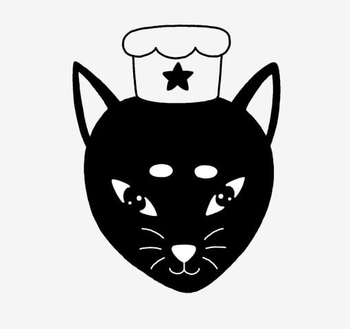

História

No “Gato de Seda”, Clara Silveira traz à vida sua paixão por gatos e pela estética coquette. Com uma carreira de sucesso em Design de Interiores, Clara fundou o restaurante em 2024 para criar um espaço onde a elegância e o encanto dos felinos se encontram com uma experiência culinária sofisticada. Cada detalhe do restaurante é uma celebração da beleza e da delicadeza, proporcionando aos nossos clientes uma atmosfera mágica e uma refeição inesquecível.
Objetivos
Nosso objetivo é criar memórias inesquecíveis para nossos clientes, proporcionando um ambiente acolhedor e pratos deliciosos preparados com amor e cuidado. Queremos ser reconhecidos pela nossa excelência culinária e pelo charme encantador que diferencia o “Gato de Seda”.